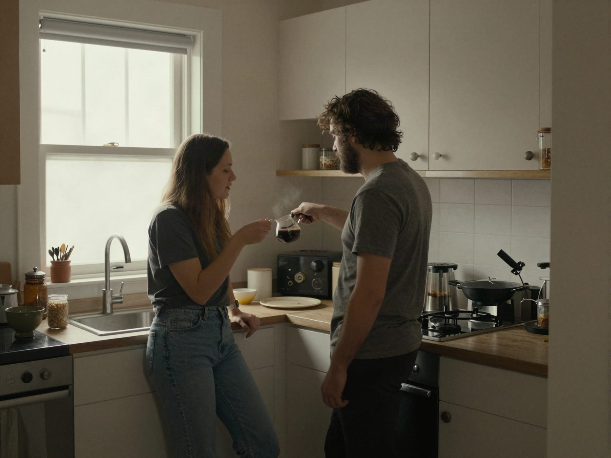
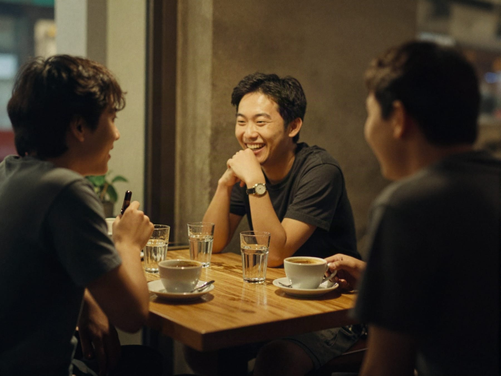
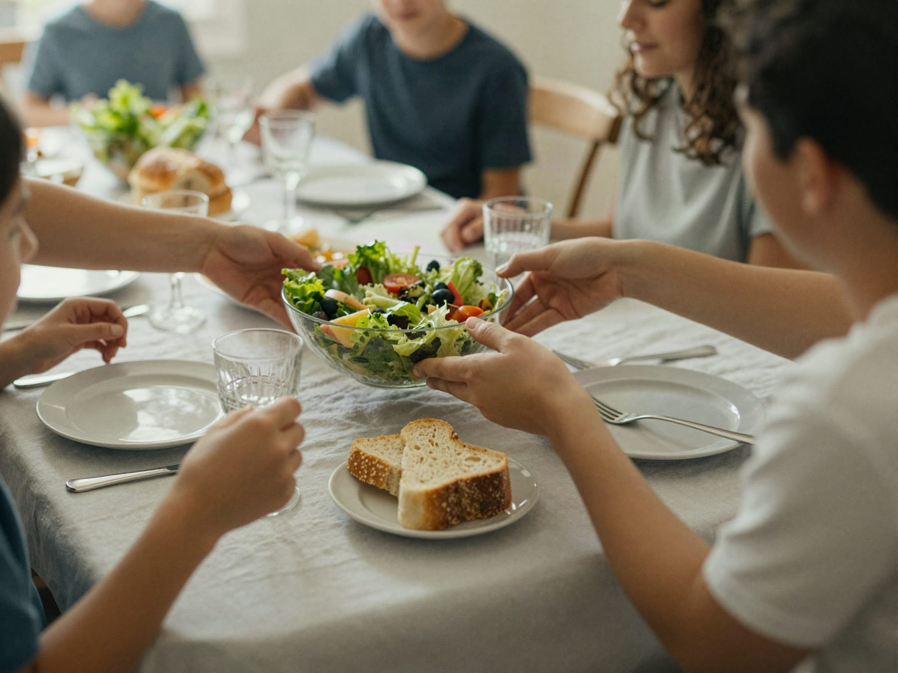

Answer sixteen everyday scenes in about three minutes. 243 writes back who you are, how you tend to be in love, friendship, family, work and money, how you come across, and what tends to help.
The example on this page is the read of The Balanced Diplomat.
Sam, you read as
You keep things smooth and fair, and you can hold two sides of a story without needing to pick one.
The middle of every sharpener: fair, adaptable and even.
You are the calm in most rooms you enter, and you produce it without effort or announcement. You see the reasonable version of almost everyone, including people who are at odds with each other. The cost is subtle and slow: your own position tends to stay unspoken.
From the read of The Balanced Diplomat, page 2 of 16.
Where others see a fight, you see two reasonable people with different information.
Things that would escalate elsewhere stay workable around you, because you refuse to treat disagreement as danger.
People trust your read because it is not bent toward you.
Each room gets its own page: how you tend to be there, what works in your favour, what is worth watching, and what tends to help.

LoveWorth watchingYour partner cannot locate your preference, so every decision lands on them.

FriendsWhat tends to helpTake a side sometimes, out loud, even a small one.

FamilyWorth watchingYou translate for everyone and speak for no one, least of all yourself.
What tends to helpSay your view once, plainly, in the meeting, before the consensus forms rather than after.
Worth watchingYou under-negotiate for yourself because asking feels like conflict.
Worth watchingFine can hide a slow decline in energy, fitness or mood that nobody flags.
The friction comes later, when nobody can find your preference.
A late no costs the other person a plan. An early one costs them a sentence.
Book it, send it, sign it. Comfort does not generate deadlines on its own.
Use the parts that are useful, and argue with the rest. Your name is optional.
Take the test